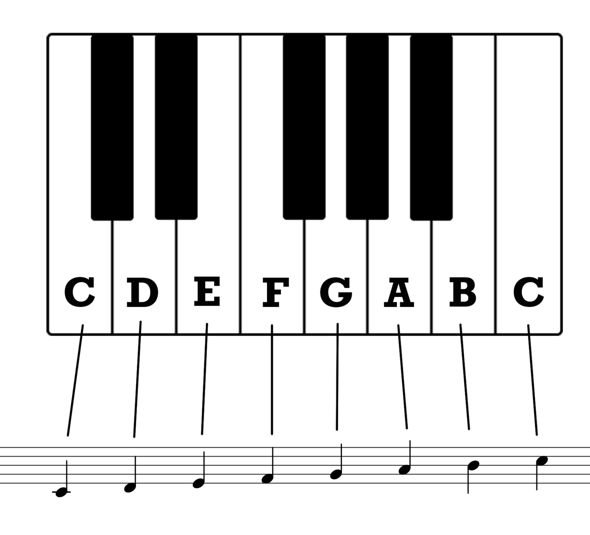
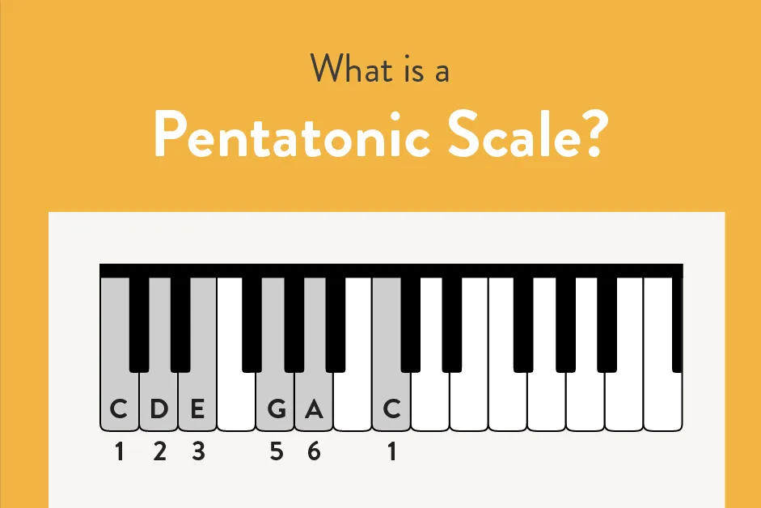
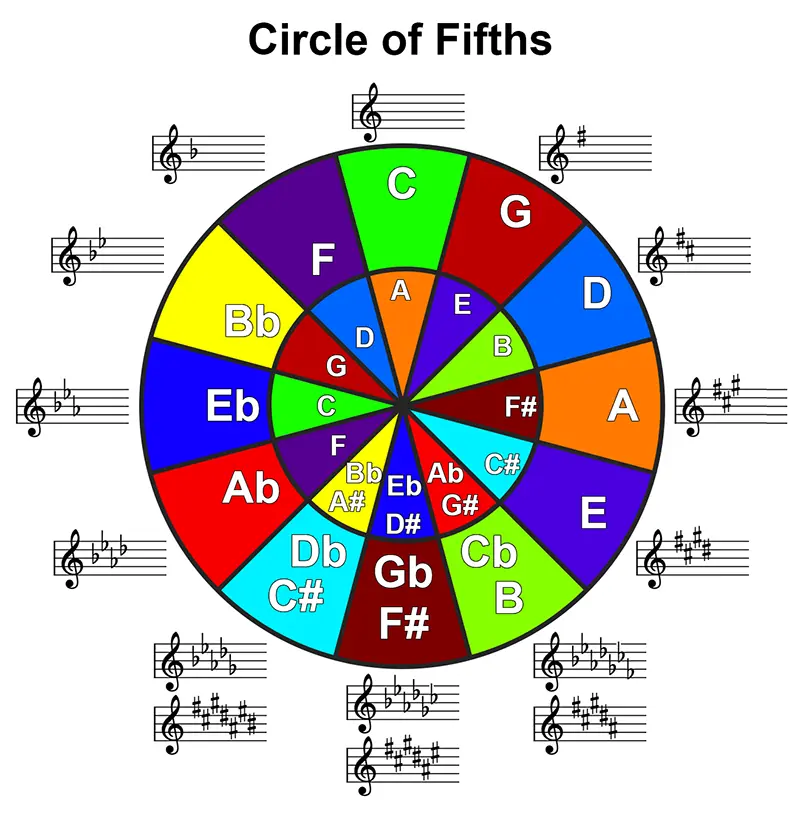

Music Theory
header link one
header link two
header link three
This website is awesome
This website has some subtext that goes here under the main title. It's a smaller font and the color is lower contrast
Music Theory 101

Chromatic scale

Major and minor scale

Pentatonic scale
